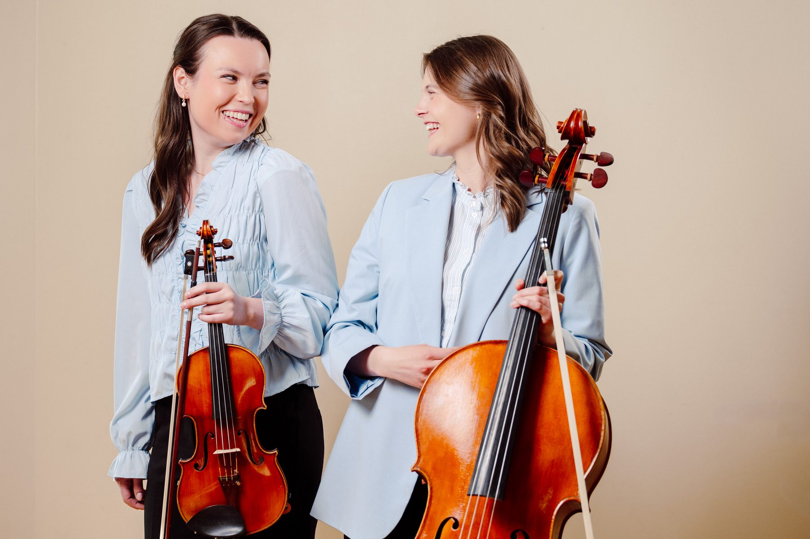
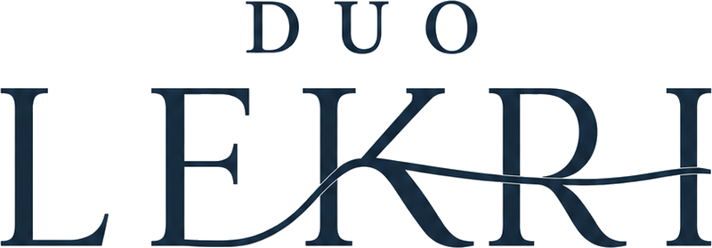

Foto: Ole Wuttudal

Strykeduo · Fiolin & cello
Duo Lekri er en strykeduo bestående av fiolinist Kristin Tennfjord Engås og cellist Lea Hedvig Hustad. De har utdanning innen klassisk musikk med base i Trondheim. Med fiolinens lyse klang og celloens varme dybde skaper de stemning og tilstedeværelse. Ønsker dere flere musikere, for eksempel strykekvartett, piano eller sang, ordner de det.
Bli bedre kjent med oss →Velg anledningen, så lager vi et tilbud tilpasset dere.